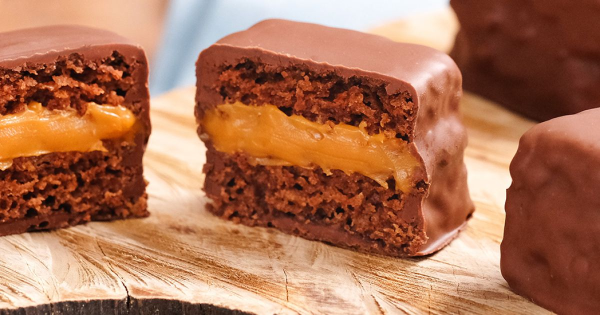

Voltar para o índice
Pão de mel

Ingredientes
- 240 ml de leite
- 85 g de óleo
- 1 ovo
- 300 g de mel
- 160 g de açúcar mascavo
- 7 g de cacau em pó
- 1 colher (chá) de caneçla em pó
- 1 colher (chá) de cravo moído
- 1 colher (chá) de fermento químico
- 1 colher (chá) de bicarbonato de sódio
- 300 g de farinha de trigo
- Doce de leite ou brigadeiro QB para rechear
- Chocolate meio-amargo QB para cobrir
Modo de preparo
- Bater todos os ingredientes menos a farinha no liquidificador.
- Despejar a mistura em um bowl e agregar a farinha.
-
Despejar a massa em fôrma untada e forrada com papel manteiga untado e
enfarinhado (não enfarinhas as laterais). Deixar descansar em temperatura
ambiente por 20 a 30 minutos.
- Assar em forno pré-aquecido a 160º C por 20 a 30 minutos.
-
Deixar esfriar, desenformar, cortasr, rechear a gosto e cobrir com chocolate
derretido.
Observação:
Curso da Eduk.